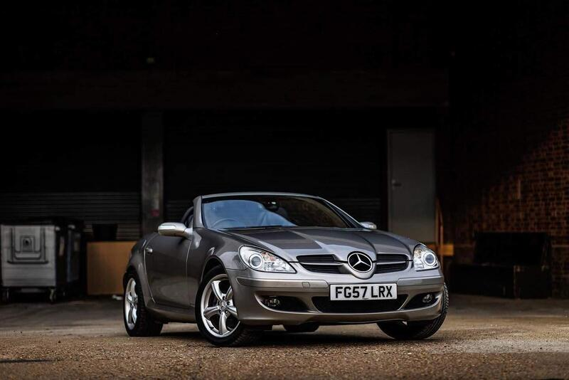
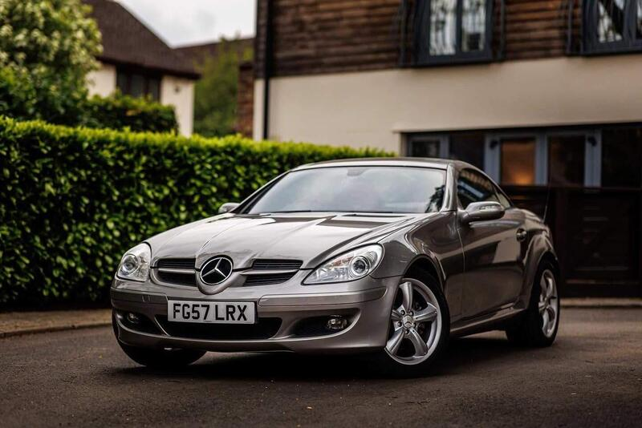
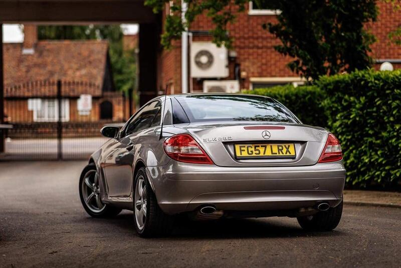
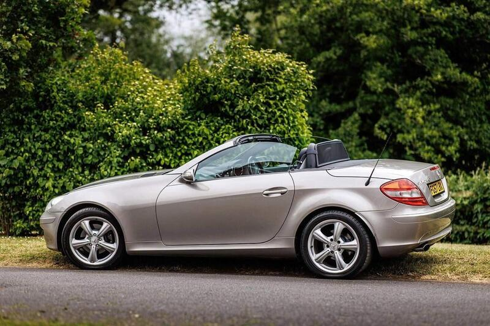

Seller photos from the AutoTrader ad.
Mercedes SLK 3.0 SLK280 Sport
The driver's SLK: a manual V6 with a long MOT.
Key facts
| Price | £2,750 |
|---|---|
| Year | 2007 |
| Miles | 125,800 |
| Model | Mercedes SLK 3.0 SLK280 Sport |
| Colour | Silver |
| Registration | 2007 (57 reg) |
| Owners | 12 owners |
| Service history | Not stated |
| MOT | 24 May 2027 (ad) |
| Seller | Private |
| Location | St. Albans |
| From GU7 | 43 mi (AutoTrader) |
| Checked | 13 Oct 2026 |
Why buy it
- SLK280 V6 with the rare 6-speed manual (ad)
- No advisories on the previous MOT (ad)
Things to check
125k miles; M272 V6 balance-shaft issue on early engines
Check the rear subframe
- Mercedes SLK R170/R171 weak spots
R171 (2004-11) galvanised and largely rust-free, but rear subframes corrode (MOT fails). R170 rusts badly – wings, arches, sills, screen pillars. Vario roof: hydraulic ram leaks, microswitches, should cycle in ~25-30s; M272 V6 balance-shaft gear on early cars; cracked exhaust Y-pipe; auto box wants oil changes.
Seller says (extract)
“Great little drop top for summer with a hardtop roof for winter. Really punchy, torquey V6 petrol engine makes it surprisingly quick, and these handle far better than the original R170 SLK's. MOT to 24th May 2027 (no advisories on previous) Taxed to June 2027 I will change the plate back from my DD06 SUZ private plate to the original FG57 LRX 125,000 miles Rare 6 Speed manual gearbox No faults or warning lights Cubanite Silver with unmarked Designo Black Leather Heated Seats Air Scarf - blows warm air through the headrests to the neck Dual Climate Control - inc recent new Compressor Apple CarPlay - great sounding system Recent Service inc Discs and Pads Electric roof works perfectly Xenon Headlights with nice and clear lenses.…”